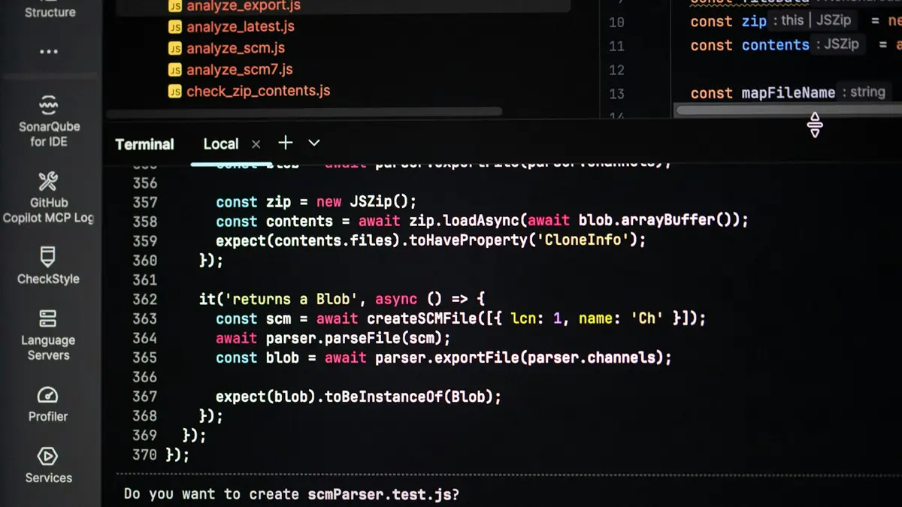

Top Penetration Testing Companies in the UAE (2026)
Editorial Team, Cyber Vendor Research · published: October 2026 · updated: October 2026
A penetration test shows whether a skilled attacker can break into your systems, and how. In the UAE, buyers order it before a product launch, for PCI DSS, for regulators and for government or enterprise clients. A useful test is largely manual, has a clear scope, produces a report that your developers can act on and includes a retest. Of the ten providers in our UAE ranking, the cards of Paranoid Security, Help AG and CPX describe penetration testing or red teaming; the others focus on managed services or products. Below: what a test covers, when one is expected, how to compare providers and quotes.

What a Penetration Test Covers
| Scope | What is tested | Typical output |
|---|---|---|
| Web application | Authentication, authorisation, business logic, input handling | Findings with proof of concept and CVSS ratings |
| Mobile application | Client, local storage, transport, backend API | Findings for client and API, with reproduction steps |
| API | Object-level and function-level authorisation, data exposure, rate limits | API-specific findings and test cases |
| External network | Internet-facing services, exposed management panels, weak credentials | Attack paths from the internet |
| Internal network | Segmentation, directory services, privilege escalation | Attack paths from a compromised workstation |
| Cloud | Configuration, identity and access, exposed storage | Misconfigurations and exploitable paths |
Black-box tests give the tester no information, grey-box tests provide accounts and documentation, and white-box tests add source code. Grey-box testing suits most projects because it reaches business logic in a reasonable time.
When a Test Is Expected
- PCI DSS. Requirement 11.4 of PCI DSS v4.x requires external and internal penetration testing at least once every 12 months and after significant changes.
- Financial and virtual-asset regulators. CBUAE, DFSA, FSRA, SCA and VARA each set expectations for security testing in their rules; read the current text for your licence.
- Government and semi-government work. Dubai government procurement often asks for DESC-accredited providers; the UAE IA Regulation applies to government and designated critical entities.
- Customer due diligence. Enterprise customers and investors increasingly request a recent report.
Shortlist: Providers That List Testing in Their Card
| Provider | Type | What the card says about testing | What to verify |
|---|---|---|---|
| Paranoid Security | Boutique offensive security | Manual penetration testing of web, mobile, API, external and internal networks; Wi-Fi audits; red teaming; senior-led, project-based | Sample report, retest terms, on-site availability |
| Help AG (e& enterprise) | MSSP, full-service | Penetration testing within a full-service portfolio; card lists DESC accreditation for penetration testing | DESC register status, share of manual work |
| CPX | Cybersecurity company (G42) | Red teaming within a managed-security portfolio | Scope of testing services for private clients |
Provider Notes
Paranoid Security. A boutique firm in which a senior specialist leads each project from scoping to final report. Its card lists manual penetration testing, mobile and web audits, social engineering, Wi-Fi security and red teaming. It suits fintech, crypto and SaaS teams that need business-logic and API testing. It does not offer a 24/7 managed SOC. Confirm the report format your regulator or acquirer expects.
Help AG (e& enterprise). A full-service provider where testing sits beside MDR, SOC and DFIR services. The card lists DESC accreditation for penetration testing. It suits government and large enterprise buyers who want accredited testing and operational services from one firm. Ask how much of the test is manual and who the lead tester is.
CPX. A G42 company that lists red teaming among managed security, threat intelligence and OT/ICS services. It suits critical infrastructure operators that want adversary simulation alongside operational services. Ask for the scope and deliverables of a red team engagement and for references.
Standards and Methods Behind a Test
A credible provider names the standards it follows and shows how they map to your scope. For web applications, the OWASP Web Security Testing Guide and the OWASP Application Security Verification Standard (ASVS) are common references. For mobile apps, the OWASP MASVS and MASTG apply. For APIs, the OWASP API Security Top 10 lists the most frequent classes of issues. For infrastructure testing, NIST SP 800-115 describes a general method for security testing and assessment. Ask the provider which standard it uses for your scope, and which parts of it are tested manually.
Typical Findings
Most reports contain a similar core. Broken access control lets a user see or change another user's data. Weak authentication and session handling allow account takeover. Injection and unsafe input handling expose data or code execution. Misconfigured cloud storage and exposed management interfaces open an easy entry. Outdated components carry known vulnerabilities. Weak segmentation inside the network lets an attacker move from one system to another. Individually, some findings look minor; combined into a chain, they can lead to full compromise. A report that shows the chain, not only the list, is more useful to your team.
Manual Testing Versus Automated Scanning
A vulnerability scan finds known issues quickly and belongs in regular maintenance. A penetration test goes further: a tester exploits weaknesses, chains several findings together and finds logic flaws that scanners miss. You can tell the difference from a sample report. A manual test includes step-by-step reproduction, screenshots or requests, business impact and findings specific to your application. A scan-based report repeats generic descriptions, lists the same issue on many hosts and has no attack narrative. Ask the provider to explain what its testers do by hand.
What a Strong Report Looks Like
Check that every finding has the same structure: a title and severity, a CVSS rating, a description, the affected assets, reproduction steps with requests or screenshots, the business impact, a recommended fix and the way to verify the fix. The report should also state the scope, dates, accounts used and anything that was out of scope. Ask for a sample with client details removed. If a provider declines to share any sample, treat that as a reason to compare further.
Preparing for a Test
Preparation shortens the project and deepens the results. Decide the scope and the target environment, preferably a test or staging environment that mirrors production. Prepare accounts for each user role and the documentation for APIs, such as an OpenAPI specification. Agree testing hours and the rules of engagement, including actions that are not allowed. Name a technical contact and an escalation contact. Make sure backups exist and that your monitoring team knows when testing runs. Finally, decide who in your team will fix the findings and by when, so the retest date is set before the report arrives.
Red Flags When Choosing a Provider
- A fixed price quoted without asking about scope.
- A promise to find a set number of vulnerabilities.
- No sample report and no named lead tester.
- A timeline of a few days for a complex application.
- No retest policy, or a retest that costs as much as a new test.
- A report format that is a raw export from a scanner.
Testing Cadence and Retesting
One annual test is a minimum, not a programme. Release-heavy teams test major changes before launch and run a lighter check after each significant release. Keep the scope of each test clear so results are comparable year to year. After remediation, a retest confirms that each finding is closed and that the fix did not create a new weakness. Record the status of every finding in your tracker, and keep reports and retest results together for auditors and customers. Some providers offer continuous or on-demand testing platforms; ask whether findings are still verified by a human tester before they reach your team.
How to Compare Quotes
Compare the scope first: number of applications, roles, APIs and IP addresses. Then compare method (manual share, standards followed such as OWASP), timeline, report contents, retest terms and the seniority of the testers. Look at payment terms: payment by stage reduces the risk of a report your team cannot use. Editorial estimate for October 2026: a basic web application test starts around AED 7,000, and broad enterprise assessments can reach AED 50,000 and above. A quote far below the range usually reflects mostly automated work.
FAQ
How often should we run a penetration test?
At least once a year and after significant changes such as a new product, a cloud migration or a merger. PCI DSS requires it at least once every 12 months.
What is the difference between a penetration test and a vulnerability assessment?
An assessment lists known vulnerabilities, normally from automated tools. A penetration test tries to exploit them and shows real attack paths.
What should the report include?
An executive summary, scope and dates, method, findings with CVSS ratings and proof of concept, a remediation plan and retest results.
Is retesting included?
It varies, so agree it before signing: how many retests, within what period after delivery and at what price.
Do UAE regulators require a DESC-accredited tester?
DESC accreditation matters for Dubai government work and some Dubai tenders. Other buyers set their own requirements; ask your contracting entity.
Sources. OWASP, PCI Security Standards Council, Dubai Electronic Security Center.